Disassembly and Assembly
DISASSEMBLY/ASSEMBLY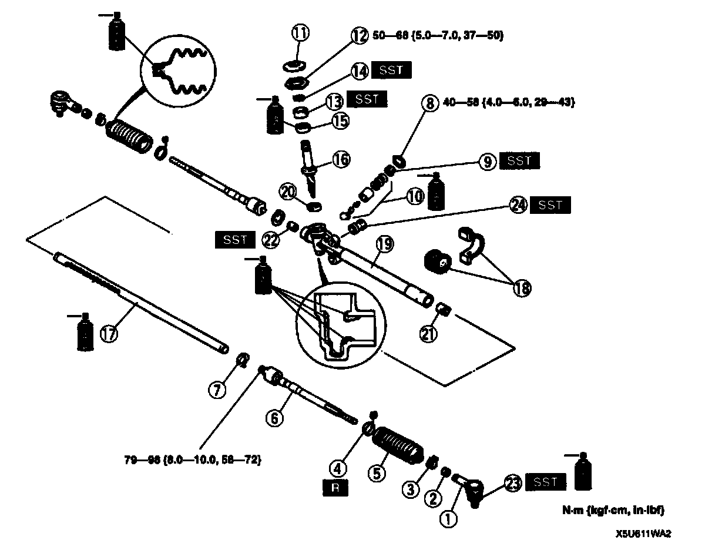
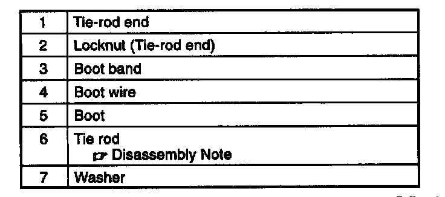
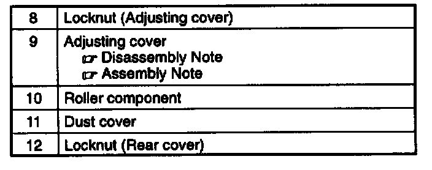
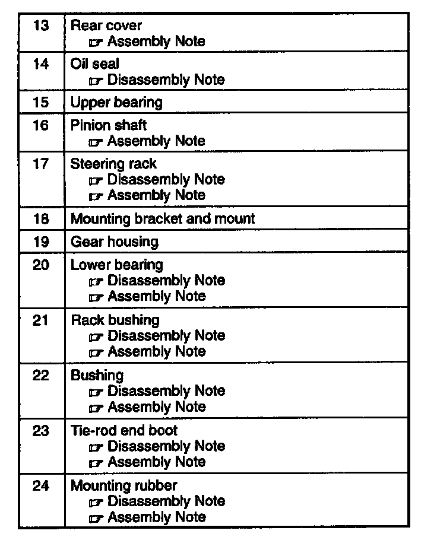
1. Disassemble in the order indicated in the table.
2. Assemble in the reverse order of disassembly.
Tie Rod Disassembly Note
1. Unclamp the washer.
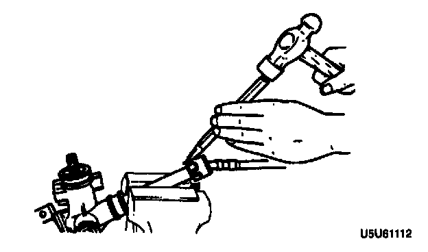
2. Remove the tie rod.
Adjusting Cover Disassembly Note
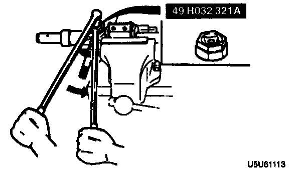
- Remove the adjusting cover by using the SST.
Oil Seal Disassembly Note
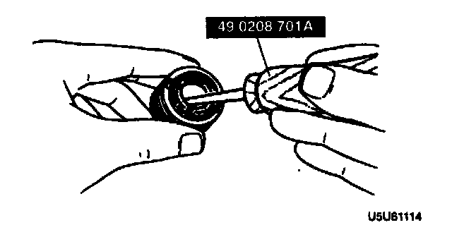
- Remove the oil seal by using the SST.
Steering Rack Disassembly Note
Caution:
- Removing the rack from the tube side can damage the rack bushing by dragging the rack teeth across it. When removing the rack, remove it slowly and carefully.
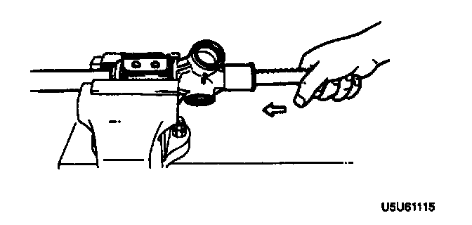
- Remove the rack from the tube side.
Lower Bearing Disassembly Note
Note:
- The lower bearing does not need to be removed unless replacing it.
1. Heat the gear housing in water to about 80°C (180°F).
2. Tap the end of the housing with a plastic hammer to remove the lower bearing.
Rack Bushing Disassembly Note
Note:
- The rack bushing does not need to be removed unless replacing it.
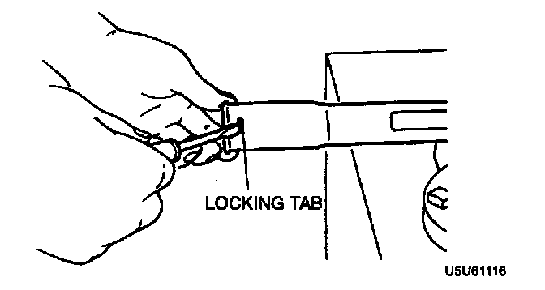
- Depress the locking tab, and carefully remove the rack bushing.
Bushing Disassembly Note
Note:
- The bushing does not need to be removed unless replacing it.
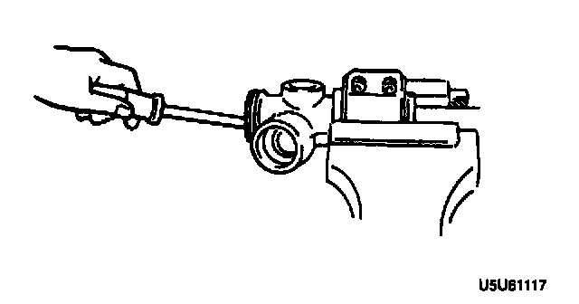
- Carefully break the bushing to remove it.
Tie-Rod End Boot Disassembly Note
1. Secure the tie-rod end in a vise.
2. Place a chisel against the boot and hold it at the angle shown.
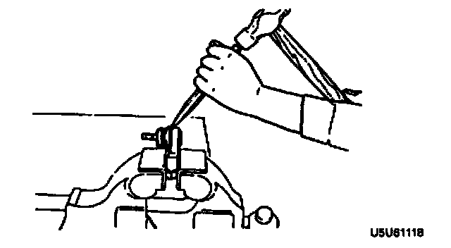
3. Remove the boot by tapping it with a hammer.
Mounting Rubber Disassembly Note
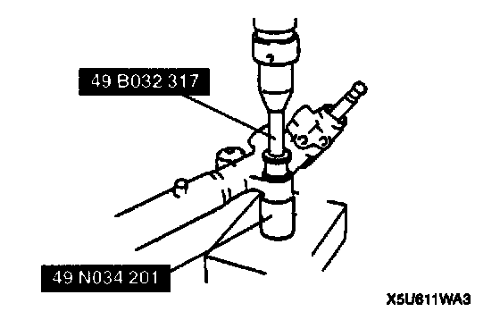
- Press the mounting rubber out from the gear housing by using the SSTs and a press.
Mounting Rubber Assembly Note
1. Apply soapy water to the rubber part of the mounting rubber.
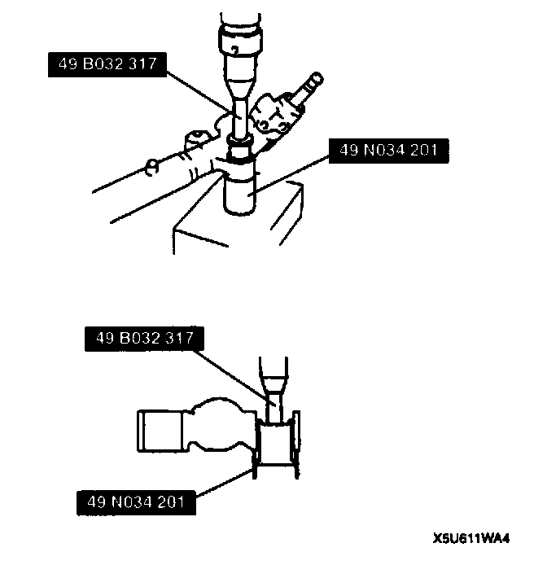
2. Press the mounting rubber until the mounting rubber end comes out completely from the gear housing by using the SSTs and a press.
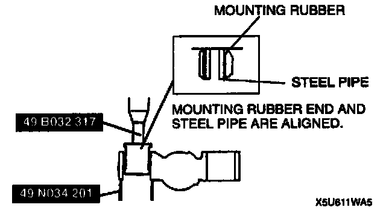
3. Reverse the gear housing, then press the mounting rubber until the mounting rubber end comes out completely from the other side. At this time, mounting rubber end and steel pipe are aligned.
Tie-Rod End Boot Assembly Note
1. Wipe the grease off the ball joint.
2. Put a small amount of lithium-based grease into a new dust boot.
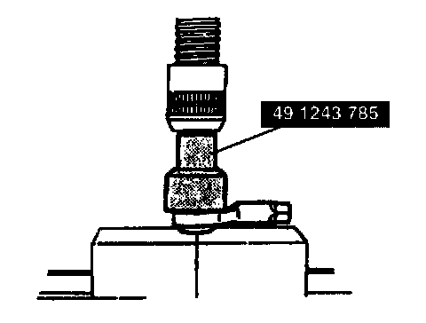
3. Install the dust boot onto the tie-rod end by using the SST and a press.
4. Wipe away any excessive grease.
Bushing Assembly Note
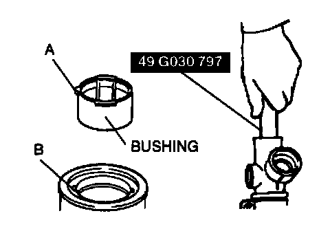
- Align A and B and press a new bushing into the gear housing by using the SST until the bushing is fully seated.
Rack Bushing Assembly Note
1. Align the tab of a new rack bushing with the hole in the column.
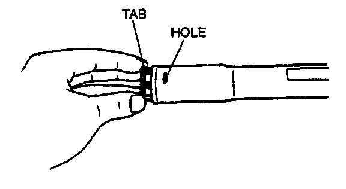
2. Push the rack bushing in until it is locked in place by the tab.
Lower Bearing Assembly Note
1. Apply grease to a new lower bearing.
2. Set the lower bearing onto the pinion shaft so that the NSK mark on the bearing faces downward.
3. Insert the pinion shaft together with the lower bearing.
4. Press the pinion shaft to seat the lower bearing.
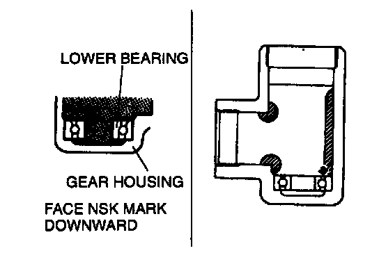
5. Apply grease to the inside of the gear housing as shown.
Steering Rack Assembly Note
1. Secure the mounting bracket in a vise.
2. Apply grease to the rack bushing.
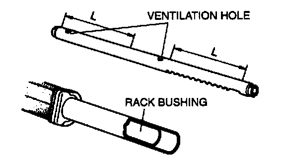
3. Apply grease to the rack teeth and the sliding surface.
Caution:
- Do not plug the ventilation holes with the grease.
Caution:
- Installing the rack from the tube side can damage the rack bushing by dragging the rack teeth across it. When installing the rack, install it slowly and carefully.

4. Slide the rack in from the tube side.
Pinion Shaft Assembly Note
1. Apply grease to the inner race of the upper bearing and install it to the pinion shaft.
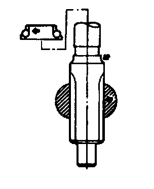
2. Apply grease to the teeth of the pinion shaft.
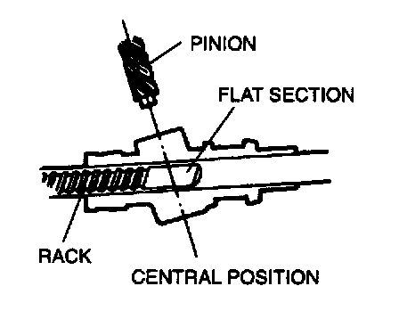
3. Turn the flat section of the rack toward the pinion, and insert the pinion.
Rear Cover Assembly Note
1. Apply grease to the outer race of the upper bearing and install it in the gear housing.
2. Install a new oil seal to the rear cover.
3. Apply sealant to the threads of the rear cover and install it into the gear housing.
4. Rotate the pinion to the left and right a few times to seat the bearing.
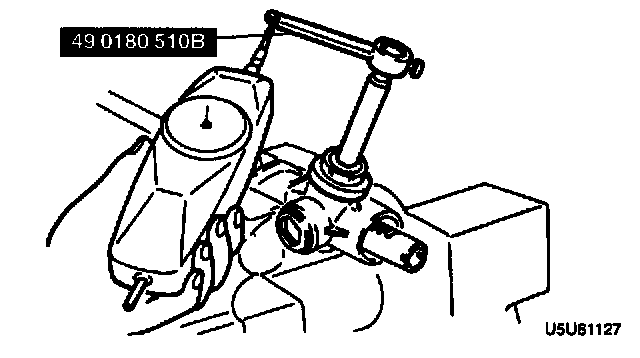
5. Tighten the rear cover so that the starting torque of the pinion is 2.0-3.4 Nm (20-35 kg-cm, 18-30 inch lbs.) (Pull scale reading: 20-34 N (2.0-3.5 kg, 4.4-7.7 lbs.)) as inspected by using the SST and a pull scale.
6. Tighten the locknut. Do not allow the rear cover to turn.
Tightening torque: 50-68 Nm (5.0-7.0 kg-m, 37-50 ft. lbs.)
Adjusting Cover Assembly Note

1. Carefully move the rack so that the pinion is set to the center (neutral position) of the rack gear as shown.
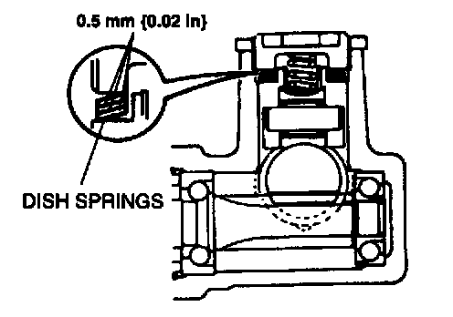
2. Install the roller component, needle roller, holder, dish springs, friction block, and the spring as shown.
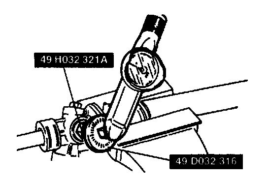
3. Tighten the adjusting cover to 9.8 Nm (100 kg-cm, 87 inch lbs.), then loosen it 25-45 . Use the SSTs to secure the adjusting cover and the locknut.
Tightening torque: 40-58 Nm (4.0-6.0 kg-m, 29-43 ft. lbs.)
4. Measure the starting torque of the pinion by using the SST.
Center position ±90°
1.0-1.1 Nm (9.5-11.5 kg-cm, 8.3-9.9 inch lbs.)
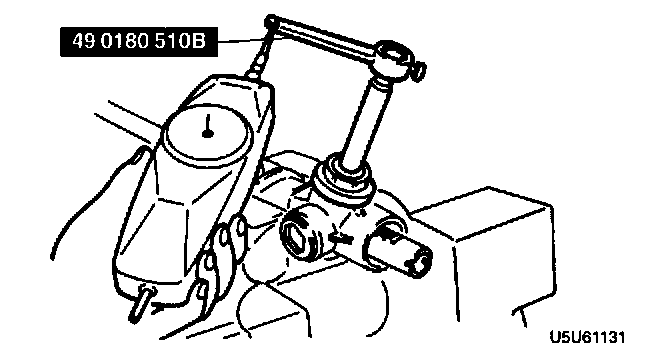
5. If not as specified, repeat steps 2 and 3.
STEERING GEAR AND LINKAGE INSPECTION
Tie-Rod End Inspection
1. Inspect the tie-rod end for damage and boot cracks. Replace it as necessary.
2. Inspect the ball joint for looseness. Replace the tie-rod end as necessary.
3. Rotate the ball joint 5 times.
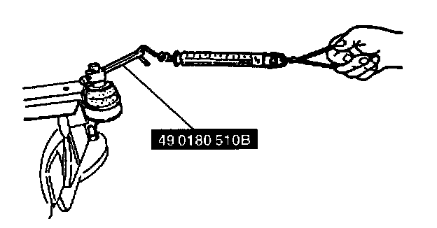
4. Measure the rotation torque of the ball joint by using the SST and pull scale.
Rotation torque: 0.3-2.9 Nm (3-30 kg-cm, 2.6-26 inch lbs.)
Pull scale reading: 3-29 N (0.3-3.0 kg, 0.7-6.6 lbs.)
5. If not as specified, replace the tie-rod end.
Tie Rod Inspection
1. Inspect the tie rod for bending and damage. Replace it as necessary.
2. Inspect the ball joint for looseness. Replace the tie rod as necessary.
3. Swing the tie rod 5 times.
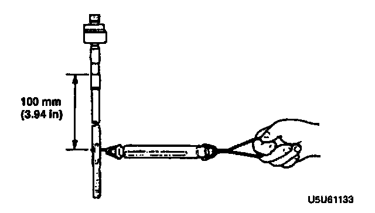
4. Measure the swing torque by using a pull scale.
Swinging torque: 0.5-3.1 Nm (5-32 kg-cm, 4.4-27.7 inch lbs.)
Pull scale reading: 3.0-19.6 N (0.3-2.0 kg, 0.7-4.4 lbs.)
5. If not as specified, replace the tie rod.
Steering Rack Inspection
1. Inspect for cracks, damage, and tooth wear. Replace as necessary.
2. Measure runout of the rack.
Runout: 0.3 mm (0.012 inch) maximum
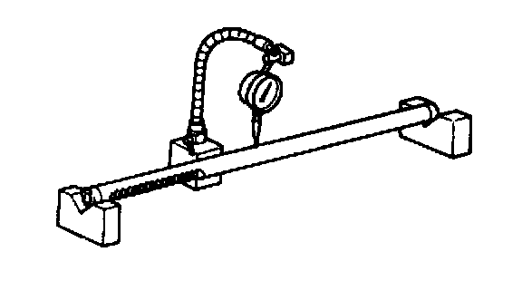
3. If not as specified, replace the rack.